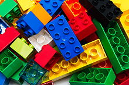
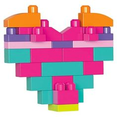

Lego a lo largo de toda el tiempo que ha existido ha evolucionado demasiado, pero, ¿como lo ha hecho? Acompañame a investigar un poco sobre su historia.
El nombre “LEGO” es una abreviatura de las dos palabras danesas “leg godt”, que significa “jugar bien”. El Grupo LEGO fue fundado en 1932 por Ole Kirk Kristiansen. ... La compañía pasó de padres a hijos y ahora es propiedad de Kjeld Kirk Kristiansen, un nieto del fundador.
El Grupo LEGO fue fundado en 1932 por Ole Kirk Kristiansen. La compañía pasó de padres a hijos y ahora es propiedad de Kjeld Kirk Kristiansen, un nieto del fundador.
En el año 1980 la compañía fundo LEGO Education, la división educativa de la compañía creada para fabricar productos enfocados al aprendizaje de los niños y niñas.
La historia de Lego comenzó en 1932 en un taller de carpinteria danes y continua en el siglo 21 como una linea popular y muy rentable de los juguetes de construccion y productos y servicios relacionados, incluyendo juegos de Lego de mesa, tiendas minoristas, Lego juegos de video, peliculas de Lego, Legoland parques temáticos y servicios de consultoria de Lego Serious Play, con un impacto significativo en diversas areas de la cultura popular. A pesar de su expansion, la empresa sigue siendo de propiedad privada.
Diferencias entre Lego y Megablock |
|
Ventas y produccionCLICK EN LAS IMAGENES |
|
LegoLego ingresa al Perú en su formato de Lego Store de la mano de Comexa S.A., representante de Lego para el Perú y Sudamérica desde hace 17 años, que ya venía comercializando la marca en sus tiendas de la marca Baby Infanti. Allí los productos Lego se siguen vendiendo en un área diferenciada de la tienda.  |
Mega blockConstruye, apila y despierta tu imaginación con este increíble Mega Blocks Caja de Construcción Pro de 790 Piezas de colores brillantes y piezas especiales. Dale a tu creatividad la forma que más quieras y te guste  |